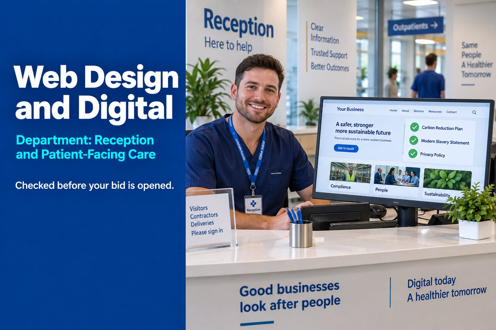

Compliance Content
Carbon Reduction Plan, Modern Slavery Statement and Privacy Policy published and current.

Department: Reception and Patient-Facing Care
Your website is the first thing an evaluator checks, often before they open your bid. It's where every certification and policy you claim gets quietly verified.
Without a current, compliant website, a buyer assumes claimed policies and certifications may not actually exist, the business is not actively maintained or invested in, a gap between bid claims and public evidence, weak data protection practice and lower overall credibility across every other claim in the bid.
None of that may be true of you. It does not matter. In a tender, the assumption is what gets scored.
Most manufacturers think a website is marketing. For tender purposes it is a due diligence surface, checked without your knowledge, outside the formal evaluation process.
A stale website works against you before a human even reads your submission.
Carbon Reduction Plan, Modern Slavery Statement and Privacy Policy published and current.
Cookie consent and data-handling disclosures that meet UK GDPR requirements.
Case studies and accreditation showcases built as citable tender evidence.
Everything on the site matches exactly what's claimed in the bid.
| Tender criterion | What this service contributes | Score effect |
|---|---|---|
| Compliance | Published policies verified during due diligence | Major |
| ESG | Carbon Reduction Plan and social value content must be publicly findable | Major |
| Risk | Inconsistency between site and bid reads as a red flag | Major |
| Quality | A current, professional site signals operational maturity | Moderate |
| Experience | Case studies serve as accessible, checkable evidence | Moderate |
Whether what you claim in the bid is publicly true. Evaluators commonly look for your Carbon Reduction Plan, Modern Slavery statement, privacy policy and certificates, and check that your company name, number and address match Companies House. A mismatch reads as a red flag before anyone opens your submission.
Yes, for central government contracts covered by PPN 006. The plan should be published and clearly signposted on your UK website, and updated at least annually. A plan that exists only as a PDF in a drawer does not meet the requirement.
Yes, for any cookies that are not strictly necessary, such as analytics and advertising cookies. Under the UK's privacy and electronic communications rules, visitors must give consent before those cookies are set. A compliant banner is one of the quickest signals a buyer has that you take data protection seriously.
Sources: PPN 006: Carbon Reduction Plans (GOV.UK) · Cookies and similar technologies (ICO)
Reviewed by Rob Atkins, Founder & Principal Consultant, Your Best Solution Limited. Last updated .